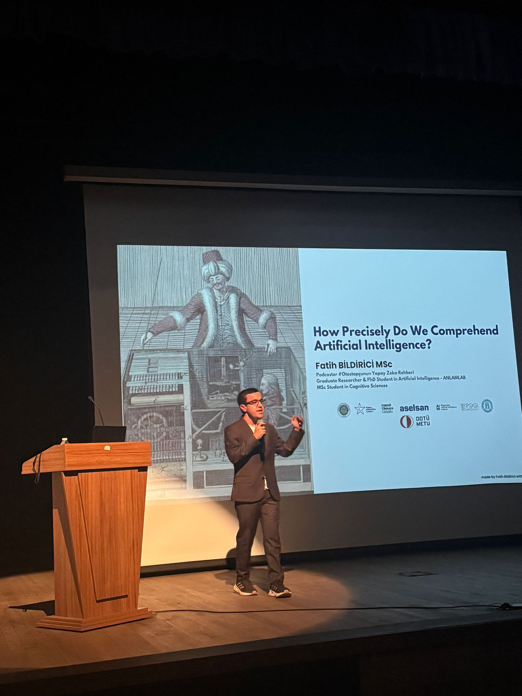
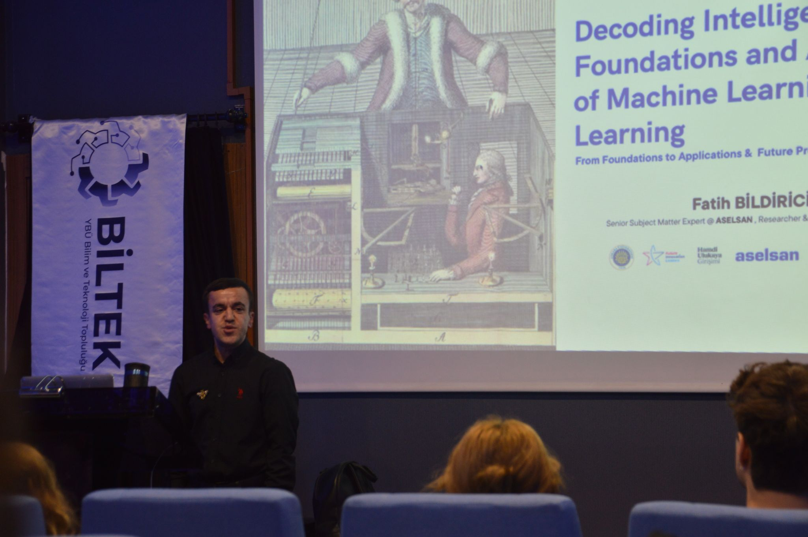
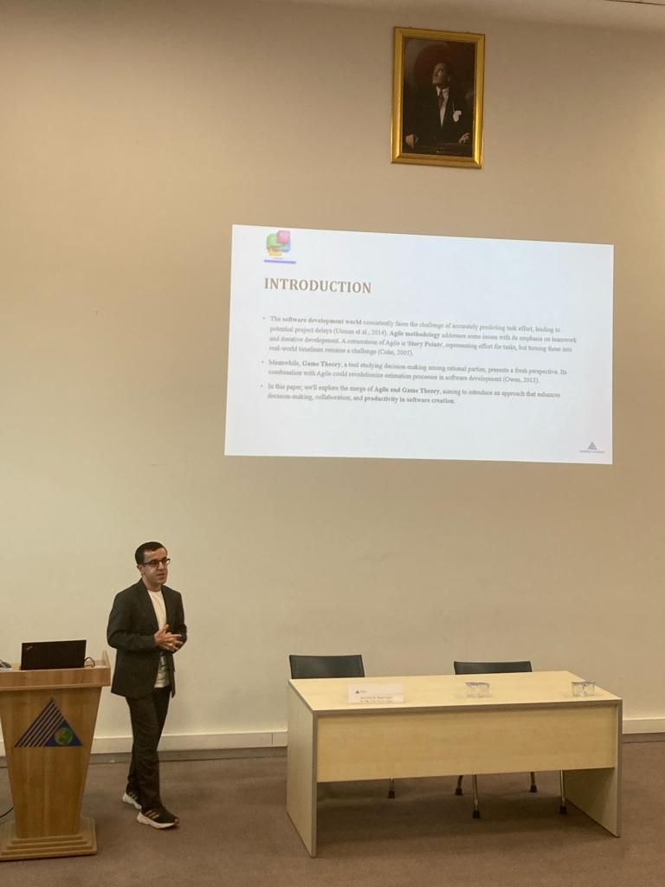
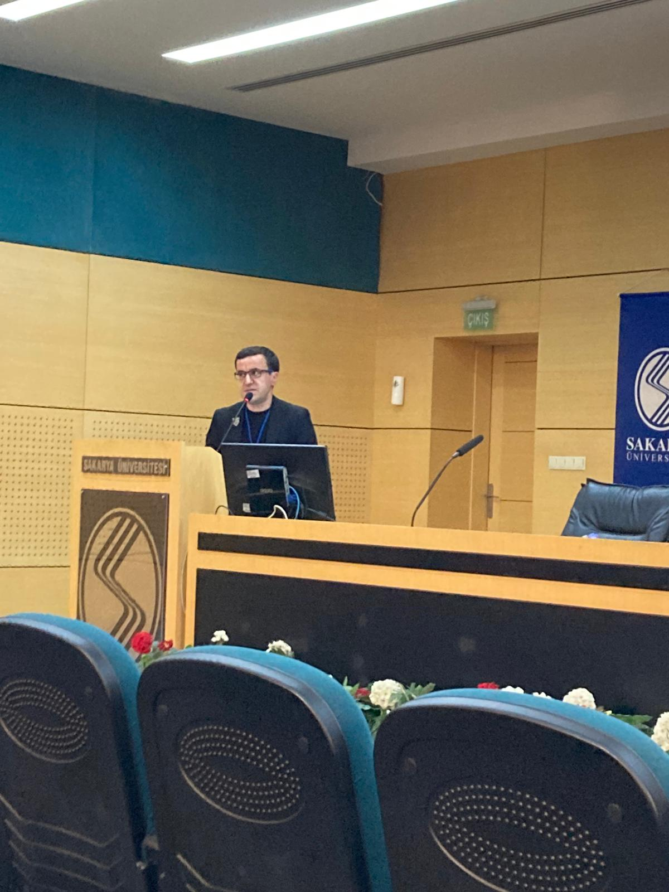
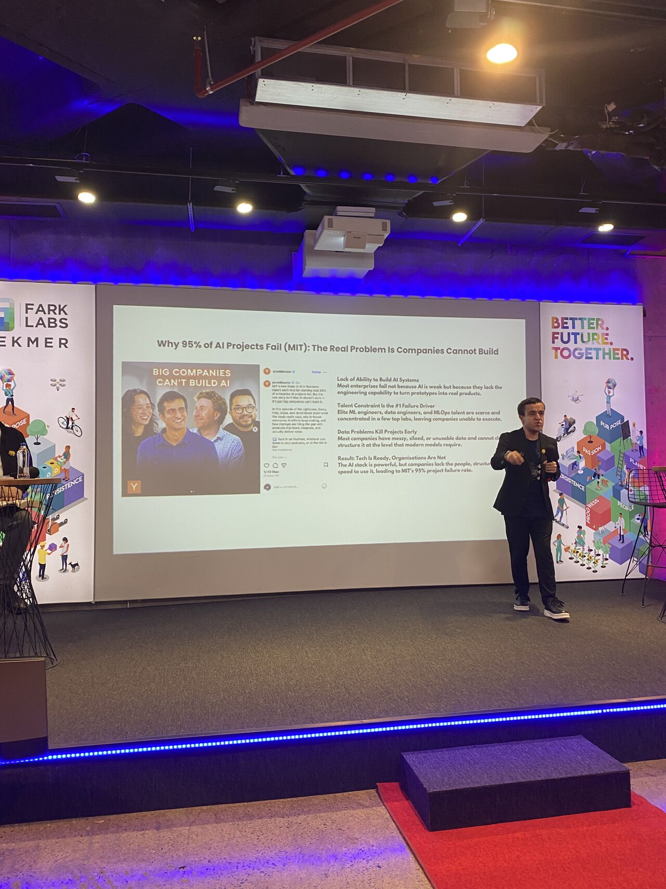

Eğitim
Yapay Zeka Eğitimleri
Kurumlar ve ekipler için temelden ileri seviyeye, doğrudan uygulamaya dönük yapay zeka ve makine öğrenmesi programları tasarlıyorum.
İletişime GeçYapay Zeka Araştırmacısı · Konuşmacı · İçerik Üreticisi
Araştırma, konuşmalar ve pratik içeriklerle ekiplerin ve toplulukların yapay zekayı daha iyi anlamasına yardımcı oluyorum. Otostopçunun Yapay Zeka Rehberi podcastini hazırlıyor; açıklanabilir yapay zeka, AI uygulamaları ve iş süreçlerine AI entegrasyonu üzerine çalışıyorum.





Birlikte Nasıl Çalışabiliriz?
Eğitim, konuşma ve araştırma odaklı danışmanlık ekseninde; ekiplerin yapay zekayı daha anlaşılır ve uygulanabilir hale getirmesine destek oluyorum.
Kurumlar ve ekipler için temelden ileri seviyeye, doğrudan uygulamaya dönük yapay zeka ve makine öğrenmesi programları tasarlıyorum.
İletişime GeçKonferans, seminer ve workshoplarda yapay zekayı ve teknolojinin geleceğini farklı kitleler için anlaşılır hale getiriyorum.
Davet EtXAI alanında doktora araştırmaları yürütüyor; kurumlara AI stratejisi, iş süreçlerine entegrasyon ve teknik yol haritası konusunda danışmanlık veriyorum.
Yapay zekayı daha iyi anlamak ve daha doğru uygulamak için; kurumlarla, topluluklarla ve ekiplerle eğitimlerde, konuşmalarda ve workshoplarda bir araya geliyorum.

Akademik konferanslarda yapay zeka okuryazarlığı, dönüşüm ve uygulama perspektifi üzerine konuşmalar.
Otostopçunun Yapay Zeka Rehberi ile podcast, bülten ve kısa içerikler üzerinden yapay zekayı daha anlaşılır ve uygulanabilir hale getiriyorum.

Akademik konferanslarda açıklanabilir yapay zeka ve AI okuryazarlığı ekseninde keynote ve oturumlar.

Panellerde yapay zekanın toplumsal etkisi, karar alma biçimleri ve gelecek vizyonu üzerine tartışmalar.

Sektörel eğitimlerde ekiplerin iş süreçlerine AI entegrasyonu ve uygulama öncelikleri üzerine oturumlar.
ASELSAN ve akademik araştırmalar ekseninde açıklanabilir yapay zeka, yazılım mühendisliğinde AI uygulamaları ve kurumsal dönüşüm başlıklarında çalışıyorum.

Topluluk buluşmalarında yeni teknolojileri anlaşılır, eleştirel ve uygulanabilir çerçevelerle ele alan eğitimler.

Workshop ve liderlik programlarında ekiplerin AI ile daha doğru sorular sormasını sağlayan uygulamalı çerçeveler.